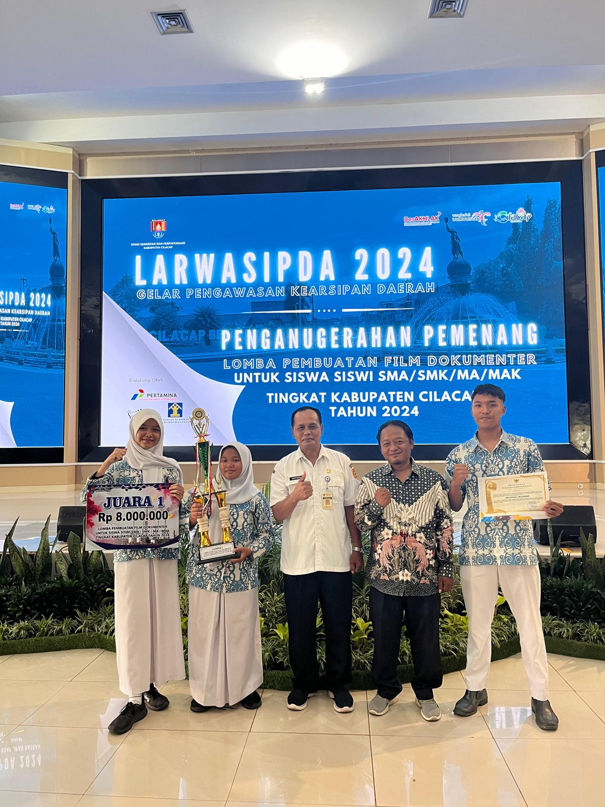
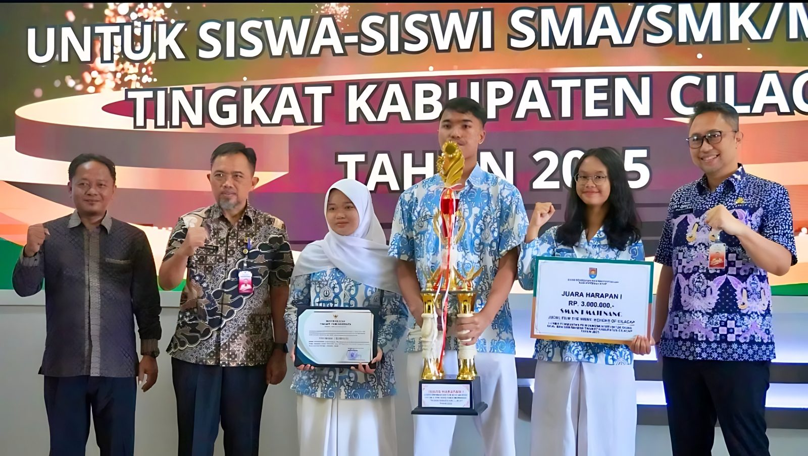

Juara 1 Film Dokumenter 2024
LARWASIPDA 2024, Lomba Pembuatan Film Dokumenter tingkat Kabupaten Cilacap.
0%
Halo, saya
Didik Pribadi
Saya |
📍 Desa Rejodadi, Cimanggu, Cilacap, Jawa Tengah
Halo, saya Didik Pribadi, lebih dikenal sebagai Gewol. Usia saya 19 tahun, mahasiswa program studi Teknik Informatika di Universitas Komputama, berasal dari Desa Rejodadi, Kecamatan Cimanggu, Kabupaten Cilacap, Jawa Tengah. Saya seorang streamer dan kreator konten. Di sini kamu bisa menemukan semua tempat saya berkarya, mulai dari live streaming sampai konten harian. Yuk mampir dan ikuti!
Perangkat yang saya pakai untuk berkarya
Satu sesi setiap hari. Kalau berhalangan, kabar terbaru ada di media sosial.
13.00 – 15.00 WIB
Kecuali ada kesibukan.
Punya game atau lagu yang ingin saya mainkan saat live? Tulis di sini, saya cek sebelum live berikutnya.
Momen berkesan dalam perjalanan saya. Klik foto untuk memperbesar.

LARWASIPDA 2024, Lomba Pembuatan Film Dokumenter tingkat Kabupaten Cilacap.

Lomba Pembuatan Film Dokumenter tingkat Kabupaten Cilacap 2025.
Dua film dokumenter yang membawa saya ke podium. Klik untuk memutar.
Karya yang meraih Juara Harapan 1 tingkat Kabupaten Cilacap.
Buka di YouTubeTemukan saya di sini
Suka dengan kontennya? Dukunganmu membantu saya terus berkarya dan lebih sering live.
Terima kasih untuk semua yang sudah mendukung. Nama ditampilkan atas izin masing-masing.
Belum ada nama di sini. Jadilah pendukung pertama!
Top Hits Indonesia, selalu diperbarui oleh Spotify
Masuk ke akun Spotify di browser agar lagu diputar penuh. Tanpa masuk, hanya cuplikan 30 detik.
Ada pertanyaan, tawaran kolaborasi, atau sekadar ingin menyapa? Kirim pesan di sini.